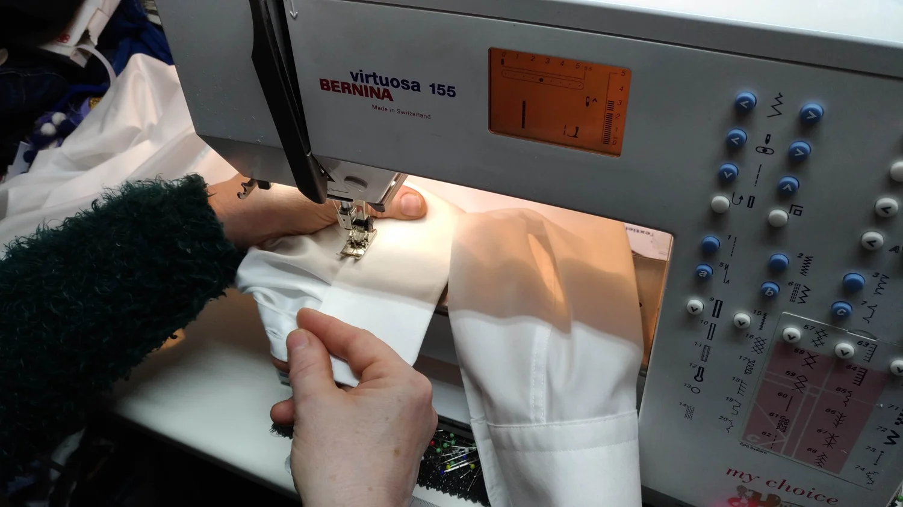
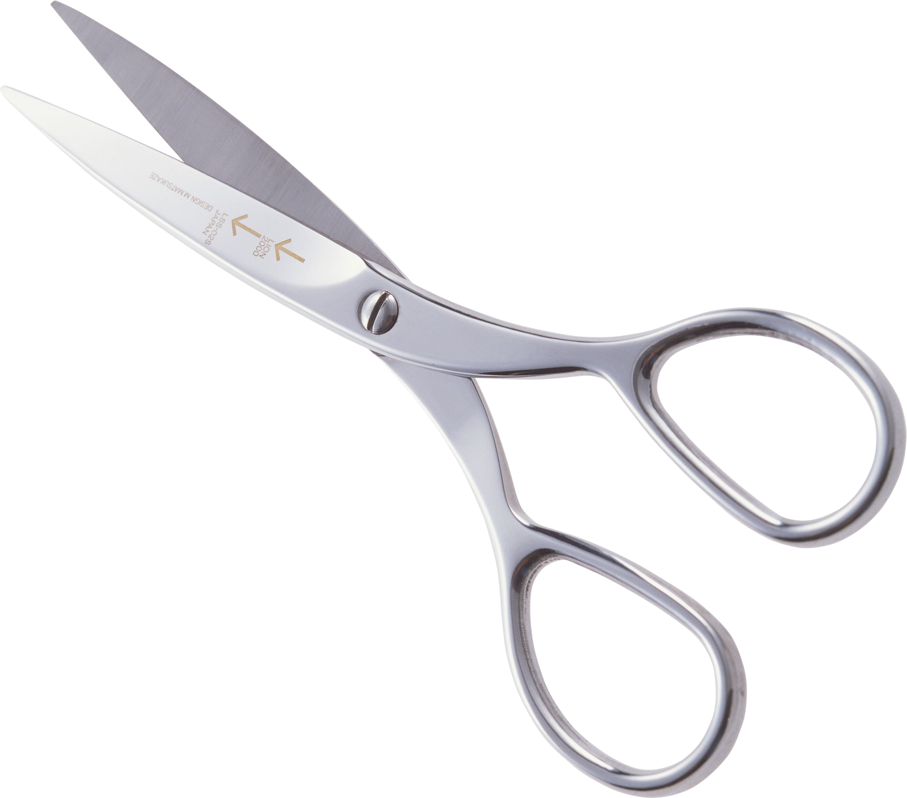
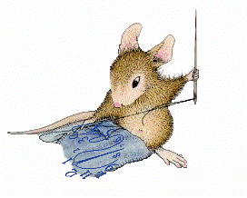
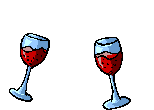
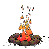

Met aandachthersteld. Uw favoriete kleding weer als gegoten. Een nieuw kledingstuk naar uw wens. Borduurwerk met een eigen naam of afbeelding. Of een cadeau dat écht persoonlijk is. Welkom in mijn atelier.
✳ Van een kleine reparatie tot iets heel bijzonders.

EEN KIJKJE IN HET ATELIER MET DE HAND & HET HART
Met liefdevoor het vak DE MEERN · UTRECHT

Persoonlijk contact ✳ Zorgvuldig vakwerk ✳ Ruimte voor uw ideeën ✳ Gemaakt om te koesteren
WAT KAN IK VOOR U DOEN?
Kleine aanpassing.Groot verschil. Een lievelingsbroek, een eigen ontwerp of een blijvende herinnering. Samen kijken we wat mogelijk is.
Een nieuwe look. Van kleding op maat maken tot het herstellen van uw favoriete stuk. Met oog voor pasvorm en een nette afwerking.
Kleding op maat maken Broeken, rokken en mouwen inkorten Innemen, ritsen vervangen en repareren Bespreek uw kledingwens ↗ MACHINAAL BORDUREN 
Een eigen naam. Met de borduurmachine geef ik kleding, handdoeken en ander textiel een persoonlijke afwerking. Van een naam tot een logo of afbeelding, ook bij kleine aantallen.
Namen en teksten op handdoeken Een afbeelding laten borduren Een persoonlijk cadeau voor een bijzonder moment Bespreek uw borduuridee ↗ GLAS GRAVEREN 
Een bijzonder Een naam, datum of persoonlijke boodschap maakt van een glas of vaas een cadeau met betekenis.
Een cadeau voor een huwelijk of jubileum Een persoonlijke tekst of afbeelding Eigen glaswerk in overleg mogelijk Vertel over uw cadeau-idee ↗ HOUT GRAVEREN 
Een warme, Met houtbranden krijgt een broodplankje of ander ongelakt houten voorwerp een heel persoonlijk karakter.
Broodplankjes met een eigen boodschap Voor verjaardagen, geboortes en meer Een ontwerp dat bij de ontvanger past Maak uw idee persoonlijk ↗
VAN IDEE NAAR IETS TASTBAARS
Uit het atelier. Elk werkstuk heeft zijn eigen verhaal.
Alles bekijken Kleding & textiel Machinaal borduren Persoonlijke cadeaus
Helemaal op uw maat KLEDING MAKEN Een cadeau met een verhaal GLAS & HOUT In hout vereeuwigd HOUTBRANDEN Voor de allerkleinsten KLEDING & TEXTIEL Steek voor steek persoonlijk MACHINAAL BORDUREN Een cadeau met uw naam MACHINAAL BORDUREN Klik op een foto om het werk van dichtbij te bekijken.